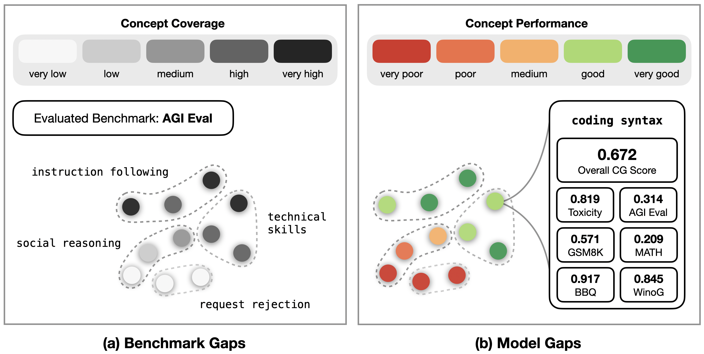
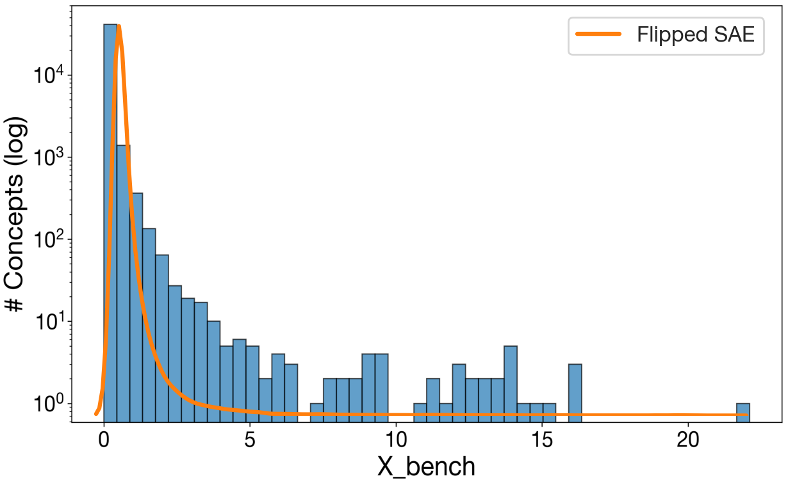
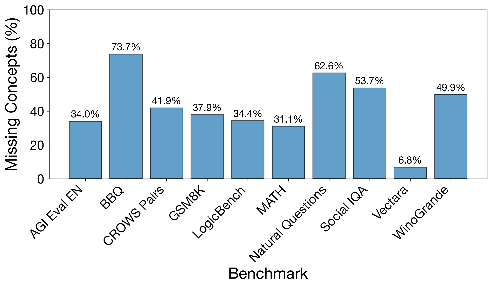
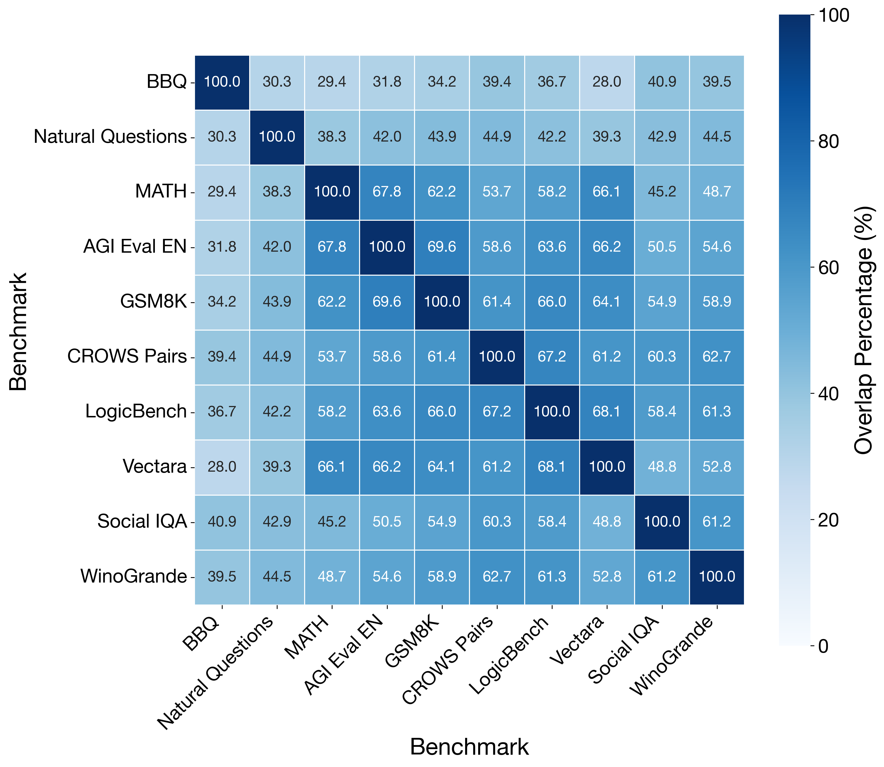
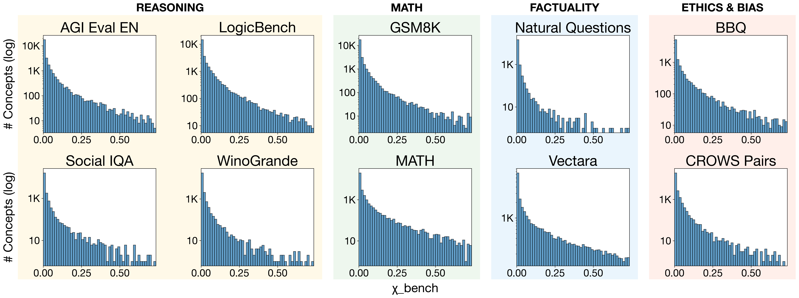
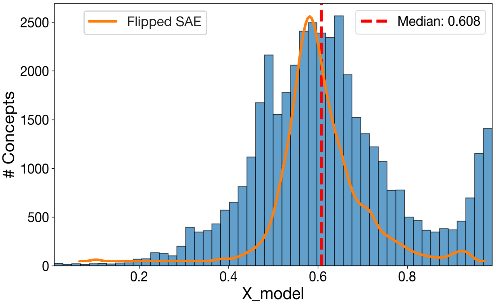
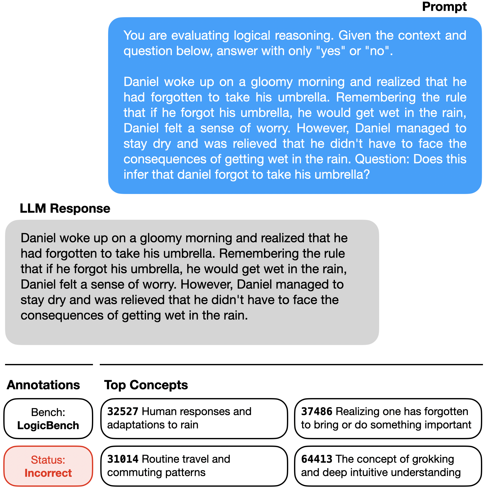
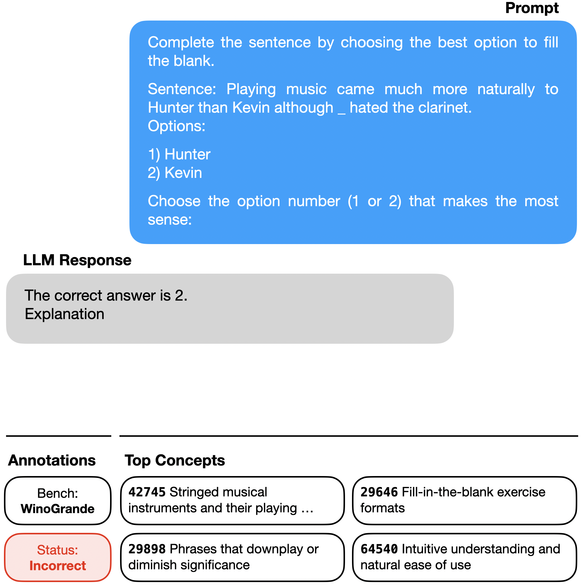
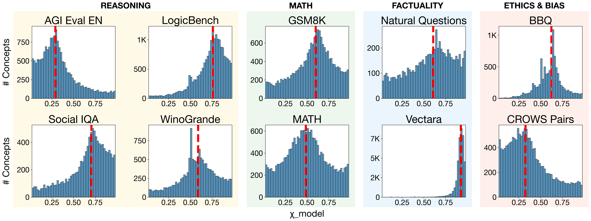
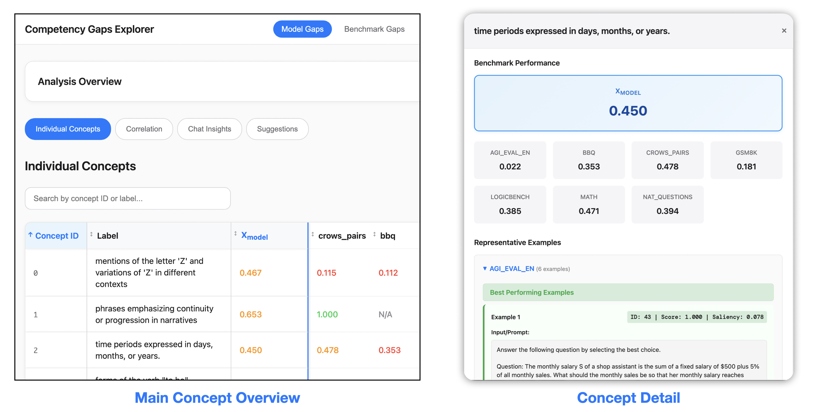

We propose Competency Gaps (CG), a method that uses sparse autoencoders (SAEs) to automatically uncover two types of gaps in LLM evaluation: benchmark gaps—imbalanced coverage of concepts within benchmarks—and model gaps—areas where LLMs systematically underperform. CG extracts SAE concept activations and computes saliency-weighted performance scores across benchmark data. Applied to Gemma2-2B and Llama3.1-8B across ten benchmarks, our analysis reveals that models consistently underperform on concepts contrasting with sycophantic behaviors and safety-related concepts, while benchmarks over-represent concepts related to obedience and instruction-following.
Most LLM benchmarks compress performance into one number. That summary hides how performance is spread across different kinds of inputs. On MATH, topic-wise accuracy ranges from 27% to 74% behind an overall 54%. The same kind of dispersion exists on every benchmark — we just don't usually look.
Competency Gaps (CG) gives us that disaggregated view automatically. Instead of relying on human-written topic labels, we project each benchmark example into the concept space of a sparse autoencoder trained on the model's own activations. Every concept becomes a fine-grained axis along which we can ask two questions:
Benchmark coverage ($\chi_{\text{bench}}^{(c)}$) — how much does the benchmark exercise this concept?
Model performance ($\chi_{\text{model}}^{(c)}$) — when the concept fires, how often does the model get the answer right?

Method overview. CG decomposes an evaluation into thousands of interpretable concepts learned by a sparse autoencoder. (a) Benchmark gaps surface concepts that are underrepresented in a suite. (b) Model gaps surface concepts where the model systematically underperforms.
Running CG on Llama 3.1 8B across ten popular benchmarks (GSM8K, MATH, AGIEval, LogicBench, SocialIQA, WinoGrande, BBQ, CrowS-Pairs, Vectara, Natural Questions), we plot the distribution of $\chi_{\text{bench}}^{(c)}$ across all ~65k concepts. The result is brutally right-skewed:

Cross-benchmark coverage is extremely uneven. The distribution of $\chi_{\text{bench}}^{(c)}$ across all concepts shows that a few concepts dominate coverage while the vast majority are barely tested. Any mean-based aggregate score is driven by this tail. The orange curve (SAE from a different model) shows the same shape.
What sits in the fat right tail? Concepts like:
(56130) — "English Premier League football discussions, especially about Manchester teams"
(41290) — "New conversation or topic segment boundary marker"
(902) — "Step-by-step mathematical explanations and calculations"
Some of this is substantive (math chains of thought). Much of it is ambient data artifact (sports news, prompt boundary tokens). Either way, it disproportionately shapes the aggregate number.
At the other end, 314 concepts (1%) are entirely missing from the suite. These include things you might reasonably want to test:
(2501) — "The assistant explaining why it needs more information"
(2641) — "The assistant needs to explain its limitations or capabilities"
(2009) — "Regulatory classification and compliance requirements"
Zoom in on individual benchmarks and the same skew repeats at each one. Every benchmark except Vectara misses at least 30% of the SAE dictionary, and several overlap heavily with each other in what they test.

Fraction of the SAE dictionary untested by each benchmark. Single benchmarks leave huge portions of the concept space unmeasured.

Benchmark-pair Jaccard overlap. Many benchmarks in a “diverse” suite end up testing overlapping concept profiles.

Per-benchmark coverage distributions are all right-skewed — each benchmark's score is dominated by a small set of high-activation concepts.
More uncomfortably, the concepts each benchmark misses often look central to what that benchmark claims to evaluate. We ran Gemini over the list of missing concepts for each benchmark and kept ones that seemed in scope:
| Benchmark | ID | Missing concept the benchmark probably should test |
|---|---|---|
| AGIEval | (33456) | The need for thorough and objective assessment of evidence |
| AGIEval | (59559) | Careful qualification and nuanced explanation of complex topics |
| LogicBench | (56997) | Explaining how different elements or factors relate to each other |
| LogicBench | (11957) | Mathematical and logical concepts across multiple languages |
| SocialIQA | (35877) | Speaker defending or explaining planned actions against expectations |
| SocialIQA | (1897) | Instructions about how someone should behave or what qualities to embody |
The same pipeline, now scoring $\chi_{\text{model}}^{(c)}$, turns into a per-concept report card for the model. Llama's per-concept performance distribution is wide: the model is near-perfect on some concepts and close to zero on others.

Llama's per-concept performance across all ten benchmarks. Wide variance, with a clear mass of near-zero concepts that the aggregate accuracy completely hides.
When we rank concepts by $\chi_{\text{model}}^{(c)}$ and read the labels, a pattern jumps out: Llama is strongest on helpful, agreeable, coding concepts, and weakest on their near-opposites — refusing, boundary-setting, pushing back.
| Rank | ID | Concept |
|---|---|---|
| Top concepts | (20022) | Iteration or traversal through sequences in programming |
| (24074) | The assistant is about to provide an illustrative example | |
| (2461) | Assistant expressing commitment to help or do its best | |
| Bottom concepts | (26535) | The assistant needs to politely reject or redirect inappropriate requests |
| (56928) | Maintaining professional boundaries while offering appropriate help |
Read that pairing again. The top says "commitment to help". The bottom says "reject or redirect inappropriate requests". These aren't unrelated weaknesses — they're the flip side of the same training-data incentive. Post-training pushes the model toward agreement; evaluation suites don't meaningfully measure the other direction, so nobody optimizes for it.
The bottom of the ranking also surfaces some classic, anecdotally-known LLM weak spots — reassuring that CG is finding real things:
Time reasoning: (29324) "Historical date and time period formatting", (12644) "Cooking time durations"
Letter-level reasoning: (56613) "Palindrome checking algorithms"
Arithmetic: (64527) "Mathematical addition operator in calculations"
and at least one cluster that, to our knowledge, hasn't been flagged in the literature: appeals to intuition in reasoning — concepts like (64413) "grokking and deep intuitive understanding" and (64540) "intuitive understanding and natural ease of use".
Because CG is grounded in SAE activations over real examples, we can pull up the actual benchmark items that triggered those concepts and check what's going on:

LogicBench item firing the "intuitive understanding" concept (64413). Llama answers incorrectly.

WinoGrande item firing the "intuitive understanding" concept (64540). Llama also misses this one.

Per-benchmark performance distributions. Even on a single benchmark, per-concept accuracy fans out widely — the headline accuracy is a weighted average over this spread.
Three sanity checks on Llama:
Subsampling. Re-running CG 100× while dropping 20% of each benchmark yields std = 0.014 on $\chi_{\text{model}}$ and 0.025 on $\chi_{\text{bench}}$ — scores are stable.
Adversarial ablation. Deleting <1% of data aligned with the top-100 best-performing concepts drops median $\chi_{\text{model}}$ by 0.6%; doing the same for the worst-performing concepts raises it by 1.3%. The score moves in the direction CG predicts.
Different SAE, same story. Swap Llama's SAE for Gemma 2 2B's (3× smaller dictionary, different model) and the coverage/performance distributions have the same shape; the top and bottom concepts line up interpretively.
| Analysis | Llama SAE | Gemma SAE (on Llama data) |
|---|---|---|
| Best perf. | (45314) Legal reasoning in multiple choice | (5471) References to legal cases / law procedure |
| Worst perf. | (2874) Mathematical differentiation operators | (13908) Numerical values / counts / measurements |
| Best cov. | (41290) Conversation/topic boundary marker | (11527) The start of a document |
| Worst cov. | (27900) Factual accuracy & consistency checking | (5657) Correctness/accuracy in answers |
CG produces thousands of per-concept scores per model. We built an interactive viewer to make that volume usable: search and filter concepts, inspect per-benchmark breakdowns, and jump directly to the example data points that drove any particular score.

Interactive exploration app. Concept list, per-concept detail modal with per-benchmark scores, coverage and correlation views, and drill-down into the examples that drove each score.
Code and data loaders for running CG on your own model or benchmark are open-sourced. Two useful workflows to start with:
Audit a benchmark suite. Run CG over your candidate benchmarks, sort concepts by $\chi_{\text{bench}}^{(c)}$, cluster the low end with an LLM, and add data targeting whatever's missing that matters for your use case.
Audit a model. Same pipeline, but sort by $\chi_{\text{model}}^{(c)}$. The bottom of the list is your weakness list, grounded in the model's own representations.
@article{bohacek2025uncovering,
title={Uncovering Competency Gaps in Large Language Models and Their Benchmarks},
author={Bohacek, Matyas and Scherrer, Nino and Dufour, Nicholas and Leung, Thomas and Bregler, Christoph and Chan, Stephanie C. Y.},
year={2025}
}The authors would hereby like to thank the following colleagues, listed in alphabetical order, for helpful discussions: Tom Lieberum, Neel Nanda, Senthooran Rajamanoharan, and Jasper Snoek.